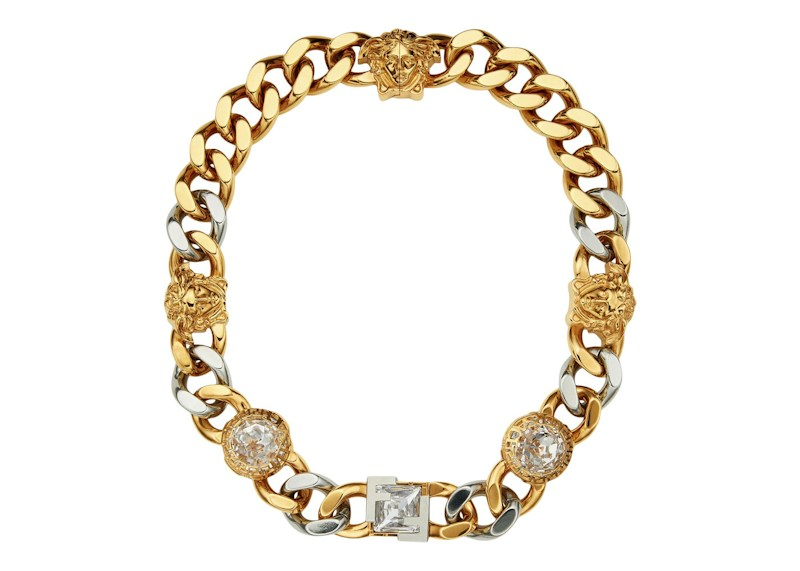

2022 / Seasonal collaboration · FendaceFendi x Versace
Fendace Chain Necklace — brass / Versace Gold
Fendace combines a generous curb chain with a dense sequence of emblems and bright decorative stones.
US$2,375Explore ↗
Reported retail · SS22 catalogue; reviewed 20 Oct 2026